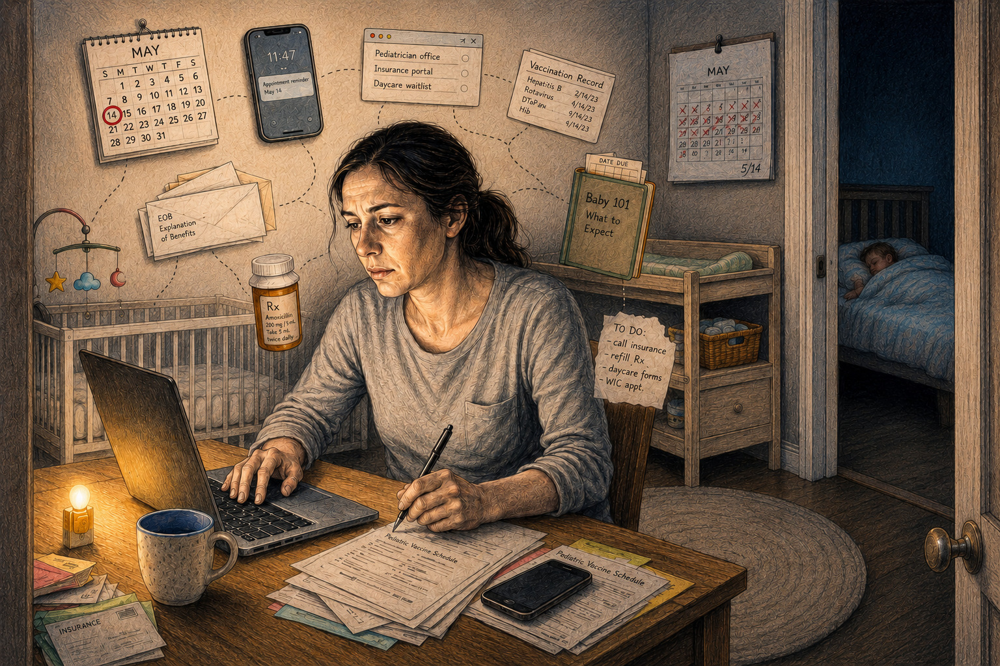
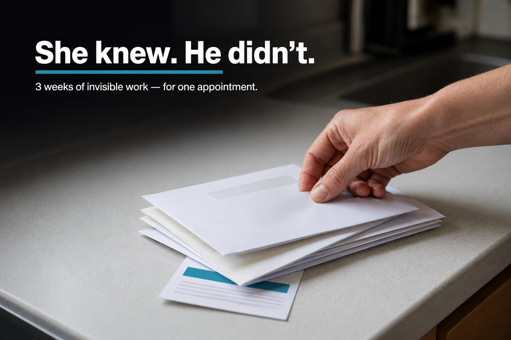
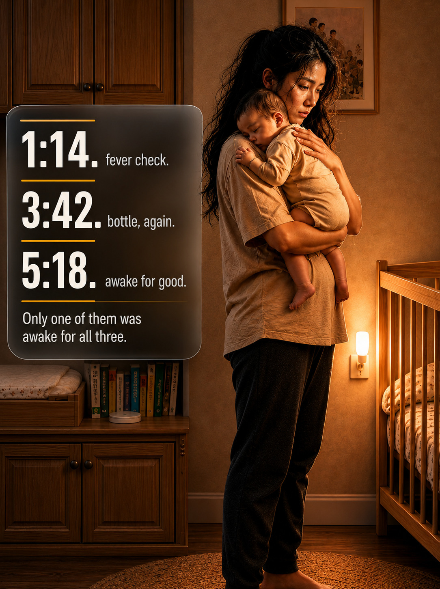
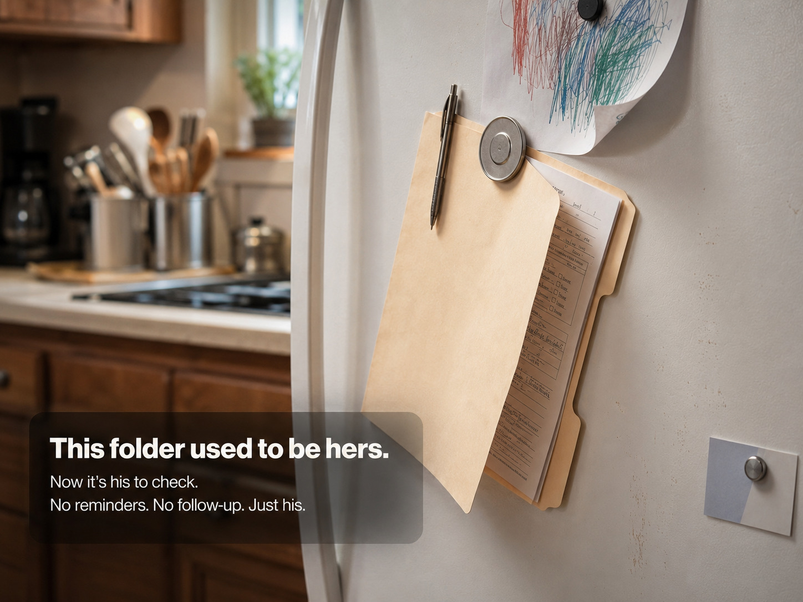
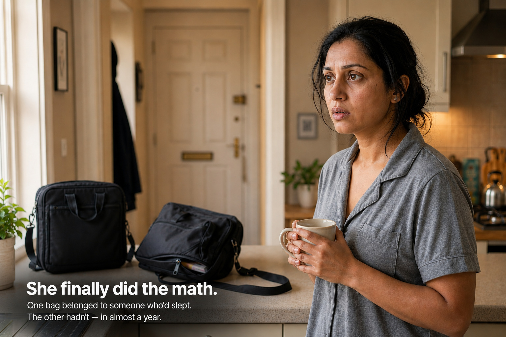
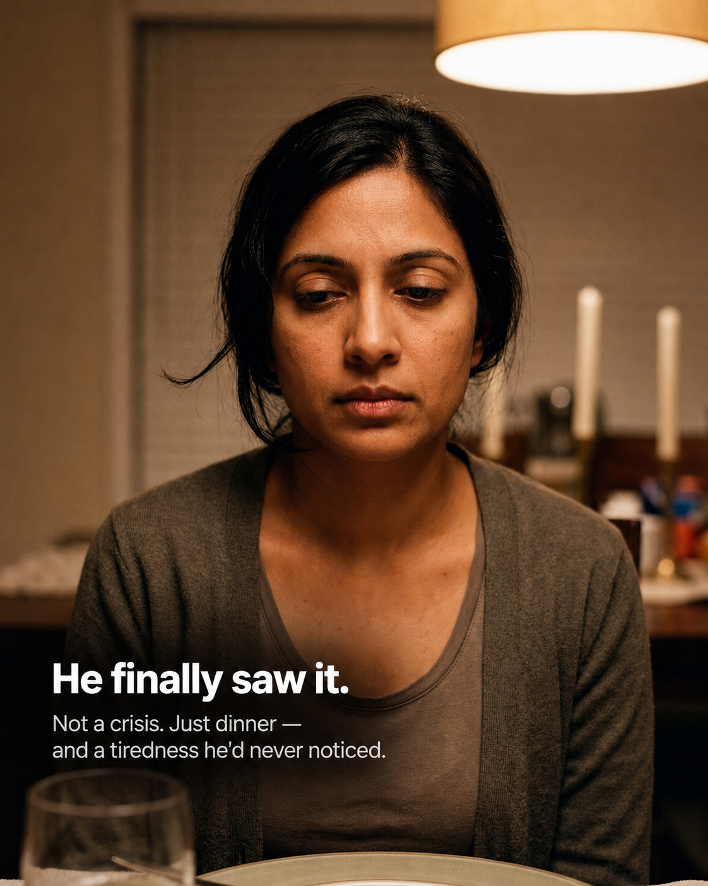

The call came the morning after I flew out.
I had been sent to San Francisco on short notice — a technical emergency, the kind that doesn't ask permission. Judy was seven months pregnant and not doing well, but the alternative was losing my position. I told myself it would only be a few days.
The next morning, the hospital called. Both Judy and the baby were in critical condition. The maternity staff were doing what they could.
I cleared the fault, booked the first flight back to Toronto, and took a cab straight from the airport in my work clothes.
She was sitting up when I walked in. The baby was in her arms. Ana, our four-year-old, was perched at the foot of the bed, already trying to hold a finger she was too small to wrap her hand around.
That night, Judy told me the rest of it.
The contractions had started the same night I flew out. She couldn't reach anyone. So she woke Ana, buckled her into the backseat, and drove herself to the hospital alone, in the dark, in serious pain.
Ana woke up and looked at her face.
"Mommy."
She said yes, baby.
"Mommy."
She said I'm here.
"Mommyyyyy—"
And then Ana was crying.
Judy pulled over. She unbuckled herself, opened the back door, and folded herself around her daughter as best she could — her stomach enormous, her body in pain, the hazard lights blinking orange into the dark.
She held her.
Ana's fists were in her shirt.
After a while the crying slowed. Ana pulled back and looked at her face, the way children do when they are checking whether the world is still intact.
"I'm here, Mommy," Ana said.
Judy kissed her forehead and got back behind the wheel.
I sat on the edge of her bed and took her hand in both of mine.
I had spent years thinking of myself as the one who kept things running. I worked long hours. I solved problems. I showed up when something needed fixing. Because those things were visible, they were easy to measure, easy to count.
What I had never stopped to consider was how much of family life runs on work that leaves no evidence behind. Not just the logistics — the remembering, the planning, the tracking. But the other layer, underneath even that. The one where a person who is frightened and in pain and alone in a car in the dark pulls over to hold a crying child, absorbs her fear, gives her back the world, and then gets back behind the wheel.
That is not competence. That is not organization. That is a person carrying two people's emotional reality at once, with no one there to carry hers.
I didn't understand that until the night Judy drove herself to the hospital with our daughter in the backseat.
Since that night, I have paid closer attention — to our own arrangement and to the ones friends and other parents have described to me over the years. The stories keep circling the same truth, in different kitchens, in different years.
This is what they have taught me.

The System You Didn't Know You Were Using
A friend I'll call Daniel sat down with a lawyer for what he thought was a straightforward consultation. Address. Employer. Income. He was good at this part.
Then she asked who his daughter's teacher was.
He opened his mouth, expecting the name to surface the way the other answers had. It didn't. He knew his daughter — that she slept with the closet door cracked exactly four inches, that she called thunderstorms "sky arguments," that she would eat a chicken nugget shaped like a dinosaur but not a square one. He knew her in the deep, daily way a parent knows a child.
He just didn't know this.
"I — give me a second." He laughed the laugh you laugh when you're stalling. "I know her. I've met her. I just can't picture the name right now."
The lawyer moved on, the way professionals do when they've seen this particular silence before.
Shoe size?
He shook his head.
Any allergies we should note?
He said he didn't think so, which is not the same as yes or no, and they both knew it.
He drove home in the rain, turning it over. Not because he'd failed a quiz — because he couldn't find the moment where he'd ever been expected to know any of it. Nobody had handed him the shoe size. Things had simply arrived already handled: the right size already in the closet, the appointment already on the calendar, the school shoes already swapped out before the old ones pinched.
He used to think that was the system working. That evening, watching his wife Priya at the kitchen table with a bill open on one side and the school directory on the other, he started to understand it was one person quietly running the system while he lived inside it.
He asked her: "How do you know all this stuff? Off the top of your head?"
She didn't look up.
"Because if I don't, who does?"
Not said with heat. That was almost the worst part. It was just a fact she'd stated to herself so many times it had worn smooth, like a stair tread.
Why the Gap Keeps Rebuilding Itself
Research published in the Journal of Marriage and Family in late 2024 by Catalano Weeks and Ruppanner surveyed 3,000 U.S. parents and found that mothers carry approximately 71% of household cognitive labor — not just the visible tasks, but the planning, anticipating, and tracking that makes those tasks possible. The study distinguished between daily core labor (childcare, scheduling, cleaning) and episodic labor (maintenance, finances, repairs). Mothers handled the majority of daily core work in nearly every household in the study.
The finding that stayed with me most wasn't the percentage. It was this: fathers were far more likely to overestimate their contribution to household cognitive labor — reporting the division as roughly equal when mothers described it as substantially unequal.
This isn't a finding about dishonesty. It's a finding about visibility. If you have never been the person responsible for making sure nothing falls through, you have no reliable way to measure what that actually costs. The person running the system tends to undercount their own labor. The person using the system tends not to see the labor at all.
Daniel experienced this precisely. He believed he had a competent, well-functioning household. He did. He simply hadn't understood, until a lawyer asked him about allergies, that his competence had been downstream of Priya's infrastructure the entire time.
This pattern doesn't stay in one domain. It spreads across all of them: healthcare management, school administration, nights, shopping logistics, social planning — whose birthday party needs an RSVP, which family obligation is approaching, what the holiday schedule actually requires. One partner becomes the intake system for all of it. The other partner uses the system without knowing it's running. Most couples encounter it first in pregnancy — well before the baby arrives, the invisible labor of preparing for a healthy pregnancy already follows the same pattern.

The Appointment That Started Three Weeks Ago
A friend I'll call Melissa told me about a pediatrician appointment that broke something open.
The appointment was Thursday at 2:30. That's all her husband knew. That's all he needed to know, from where he stood.
Melissa had known about it for three weeks.
It started with the reminder card she'd almost missed under a stack of mail. Then a call to reschedule, because the original slot conflicted with school pickup and nobody had thought through how that worked. Then the insurance portal that needed updating before they'd process anything — forty-five minutes and two phone calls. Then the vaccination record that had disappeared from the folder where she kept every other medical document, which sent her through two drawers and an email chain to their previous pediatrician before she found it. Then a mental note about snacks, because their daughter had a tendency to fall apart in waiting rooms and the difference between a fine appointment and a difficult one was usually crackers. Then the backup plan for pickup in case the appointment ran long. Then the Wednesday-night reminder she set so she wouldn't forget the forms in the morning.
Wednesday night was when her husband found her at the kitchen table. Cold coffee. Laptop open. Looking, she knew, like someone managing a crisis.
"Why are you so stressed?" he asked. "It's just an appointment."
She looked at him for a moment.
"You take her tomorrow."
"Sure. Of course."
Instantly. Easily. The way you agree to something that starts at 2:30 and ends around 3:30 and requires nothing between except showing up.
That ease was the whole problem. He genuinely believed the appointment was simple — because for him, it was. He had no idea it had started three weeks ago in a pile of mail.
"I don't need you to help with the appointments. I need you to be the person who knows they exist."
This is the failure mode that shows up again and again in the conversations I've collected. The grocery run handled by phone from every aisle. The dentist visit managed by text from the waiting room. The laundry sorted by one partner while the other folds, because only one of them knows which things can't go in the dryer. The task moves. The ownership doesn't. Delegation still requires a delegator, and the delegator is still, always, the one who has to hold the picture of what needs to happen and when.
The Dinner Table Comment
I want to stay with one version of this for a moment, because it touches something the other stories don't.
A friend I'll call Rachel told me about a dinner at her husband's aunt's house. He loaded the dishwasher at the end of the evening — carried the plates, rinsed them, stacked them. The aunt set down her wine glass and said, with genuine warmth, "He's one of the good ones."
The table agreed. Rachel smiled with everyone else.
She's good at that.
In the car on the way home, while the kids were asleep in the back, she tried to locate what was bothering her. Not him — he had loaded the dishwasher, and he really was, in most of the ways that counted, a good partner. Not the aunt, who was lovely and meant it. Something smaller and more structural, like a thing you can't un-see once you've noticed it.
That morning, before anyone else was awake, Rachel had packed two lunches, tracked down a library book due that day that would have cost them seven dollars if she'd forgotten, signed a field trip form, texted the babysitter about a Friday schedule change, and ordered a birthday gift for a child in her daughter's class — a child Rachel had never met, whose birthday she only knew about because she'd photographed the party invitation before her daughter lost it.
All of this before her first cup of coffee.
Nobody had watched her do any of it. Nobody called her one of the good ones for remembering the library book.
I think about this particular story often, because it names something the other stories approach but don't quite state: the problem isn't only the distribution of labor. It's that visible labor gets praised in a way invisible labor doesn't — can't — because by design, invisible labor disappears the moment it works. When Rachel remembers the library book, nothing happens. Nobody notices. That's the point. When her husband loads the dishwasher, the aunt notices immediately, because it's there to see.
This is not the aunt's fault. It's the structural feature of invisible work: the better it runs, the less anyone can see it running.

The Night Version
Emma and her husband Ryan didn't have an argument about this. They had a Tuesday morning.
Their son was nearly a year old. For almost all of those months, Emma had been the one who got up at night — not because Ryan refused, not because of some explicit agreement, but because of something that had started on his tenth day of life, when Emma was sitting up in the dark before she'd fully opened her eyes and said, go back to sleep, you have work.
He hesitated. She remembers the hesitation.
He would have gotten up. She sent him back to sleep, because she was already awake, because he had meetings, because his exhaustion had visible consequences and hers felt more absorbable. It seemed reasonable — it was reasonable, the first time. It just never ended.
Nobody had ever sat them down and said his sleep mattered more because of the job. Nobody had to. It had built itself, one reasonable-sounding exception at a time, until the exception was just the architecture of their nights.
By month nine, they both had nine o'clock meetings. They both worked full days. They both, in theory, needed to walk into those rooms with something left. She was standing in the kitchen holding a coffee she didn't remember pouring, looking at two laptop bags by the front door — identical in what they implied — when she did the arithmetic almost without meaning to.
1:14. 3:42. 5:18.
For nearly a year, only one of those laptop bags had belonged to someone who'd actually slept.
She laughed. Not the kind of laugh that means something's funny. The kind that shows up when something has been in plain sight the whole time and you've finally tripped over it.
They didn't have the conversation about who should help more. They had a different one — about who owned which nights, outright, no negotiation required once it was decided. Monday, Wednesday, Friday: his. Tuesday, Thursday, Saturday: hers. Sunday alternated. Whoever was on duty got up. No nudging, no lying there hoping the other person would move first.
The first night it was Ryan's, Emma woke at the first cry out of a year of conditioning — and lay still. Not my night. She rolled over. Ryan got up. She heard him in the hallway, the low murmur of him talking to the baby, a sound she'd heard almost never because she'd always been already there.
The baby settled. The house went quiet.
The baby still woke just as often as before. The exhaustion didn't go anywhere. What changed was smaller and stranger than either of them expected: she stopped being the only person doing the math about whose turn it was. The responsibility had an owner two nights a week that wasn't her — and that, not the extra sleep itself, though that helped, was the part that finally let something in her chest unclench.
What Ownership Actually Means
The couples whose arrangements have held up over time — the ones whose stories I'm still hearing about months after the initial shift — didn't divide tasks. They divided domains. If you're still in the preparation stage, thinking through how to set up your partnership before the baby arrives makes this shift significantly easier.
He doesn't help with school paperwork. He becomes the person who knows what the school needs, when they need it, and what happens if it's late. Every email from the school goes to him first and stays there. The folder of forms on the fridge is his to check. If a permission slip sits unsigned for three days, he's the one who takes it in with an apology note she didn't write. She stops checking the portal. This is harder than it sounds — the instinct to verify, to catch what might fall, runs deep in someone who has been the safety net. But she has to actually let the net go, or the domain never really transfers.

He doesn't remind himself when the dental checkup is due. That's his to track, his to book, his to feel slightly anxious about in the background of an ordinary Wednesday evening.
She doesn't forward the school email about the spirit-day theme. That's his inbox, his problem, his daughter showing up in regular clothes on pajama day if he misses it.
Daniel, after the lawyer's office, took the whole school domain this way. He missed a spirit-week email in the first month and their daughter arrived in the wrong clothes. She did not let him forget it. He had to ask Priya twice what size their daughter wore now. But by October he knew the teacher's name without thinking about it. He picked his daughter up from a friend's house once without being told the address, because he already had it. Priya never asked him to take the school folder. She just, gradually, stopped checking it.
That gradual stop — the moment the checking reflex finally goes quiet — is what transfer actually feels like from the inside. Not a handover. Not a thank you. Just, one day, the realization that you haven't thought about it in weeks.
Signs the Balance Is Slipping Again
Resentment doesn't announce itself. It builds in the gap between what's carried and what's seen. These are the signals worth watching for.
- One partner is always the first to notice when something is running low, falling behind, or about to become a problem.
- One partner waits to be told what needs doing rather than carrying the awareness themselves.
- One partner feels like the household manager — responsible for knowing everything and directing the other — while the other feels like a capable contributor who isn't sure what to contribute to next.
- Conversations about the division of labor start sounding like accusations even when nobody intends them that way.
These are signs that the task split has been revised but the domain ownership hasn't transferred. Someone is still running the whole operation — carrying the full picture, tracking the full inventory, feeling the full weight of whatever might fall through. They're just doing it more quietly than before.

What Happened After
I went back to work two weeks after Judy came home. The same job, the same hours, mostly. I didn't quit anything or make any grand speeches. That's not how it worked.
What changed was smaller than that. I started noticing things I had trained myself not to notice — the specific tiredness behind her eyes at dinner, the way she'd already handled something before I knew there was something to handle. I had always called that competence. I started understanding it was labor.

But more than that: I started noticing the other kind. The kind that doesn't appear on any inventory of household tasks. The way she could hold her own fear steady enough that our daughter didn't feel it. The way she could be the one who needed comfort and still be the one giving it. I hadn't had a word for that before. I'm not sure I have a good one now. It's not logistics. It's not planning. It's the work of being the person other people's emotional worlds orient around — the one who pulls over, holds the child, absorbs the fear, and then gets back behind the wheel.
She never brought that night up again. Not as a weapon, not as a reference point. It was just something that had happened. I think that's what made it stay with me the way it did — she wasn't holding it over me, which meant I couldn't put it down.
Our son Daniel is eleven now. Ana is fifteen and borrows my old jackets and pretends she doesn't care about anything, which means she cares about everything.
There are still weeks I travel too much. Judy would tell you the same. But something is different in how I come home. I come home knowing, in a way I didn't before, what the place costs to keep standing while I was gone.
I don't think I became a better man the night I sat on that hospital bed. I think I just stopped being able to pretend I was the whole story.
The Question Nobody Asks Early Enough
There's a question none of these couples asked at first, because the answer seemed too obvious.
When something gets missed — when the form is late, when the library book is overdue, when the baby needs more formula at 11 p.m. and there isn't any — who carries that as a personal failing, and who experiences it as a logistical problem?
Not: who does more tasks. Not: whose name is on the form. But: who feels it as a reflection on who they are, and who feels it as something to fix?
That gap — smaller than it sounds, larger than almost anything — is where resentment actually lives.
It doesn't come from unfair task distribution, though the tasks are usually unfair. It doesn't come from a lack of appreciation, though appreciation is usually scarce. It comes from one partner moving through family life under a contract the other never signed: the contract that says if something falls through, it falls on you. Not because anyone decided this. Because at some point in the early, relentless weeks of new parenthood, one person started noticing things first. And whoever notices first tends to notice second. And third. Until noticing is simply what they do — constant and automatic — while their partner continues to be a person who can, without guilt, not notice.
This is why the task-splitting conversations never quite land.
You can redistribute every errand in a household and never once touch the question of who lives with what if the errand doesn't happen. She feels the weight of the library book even when he's the one returning it. She cannot not feel it — because she has been, for months or years, the person who would have been responsible if it wasn't returned. That relationship, between her and the consequence, doesn't dissolve just because the task changes hands.
What the couples in these stories eventually figured out was that the task was never the point.
The point was the consequence.
Real redistribution — the kind that actually moves the weight — requires something harder than a new chore chart. It requires one partner to stop being the safety net. To let the form sit unsigned. To say nothing when the wrong bread comes home. This is almost physically painful for a person who has spent years preventing exactly these outcomes.
And it requires the other partner to actually experience — not just acknowledge, but feel, in the way you feel something when it's genuinely yours to fix — what it means to be responsible for making sure nothing important gets missed. You don't learn this from a conversation. You learn it by dropping something and being the one who has to pick it up.
That's the part none of the parenting books mention. Not because it's complicated. Because it's uncomfortable.
The couples who eventually got somewhere real — the ones whose arrangements have held — didn't get there by talking about it more. They got there when one person stopped catching things, and the other person finally understood, from the inside, why that had always been so exhausting.
When to Ask for More Support
Most of what this article describes is ordinary, navigable friction — hard, but workable between two people who are both trying. But if resentment has become persistent, if one partner has withdrawn, or if the exhaustion of early parenthood is combining with low mood, difficulty bonding, or feelings of hopelessness that don't lift, those are signs worth taking seriously.
Postpartum mood disorders affect approximately 1 in 5 new mothers and are both real and treatable. (NICHD / JAMA, 2020.) Speaking with an OB-GYN, midwife, or perinatal mental health professional is one of the best things you can do for your partnership and your child. For families who have also experienced pregnancy loss alongside the pressures of early parenthood, our guide to first trimester miscarriage addresses both the medical and emotional dimensions that often go unspoken.
Frequently Asked Questions
The default parent is the partner everything routes to first — the one who notices what needs doing before anyone asks, tracks what's running low, manages the family's schedule, and feels personally responsible when something falls through. The role isn't chosen deliberately. It assembles itself, usually in the first weeks of a baby's life, and hardens into habit before either partner notices.
Research from the Journal of Marriage and Family (Weeks & Ruppanner, 2024) found that fathers significantly overestimate their contribution to household cognitive labor, reporting the division as roughly equal when mothers describe it as substantially unequal. This isn't dishonesty — it's the nature of invisible work. When a system functions well, there's nothing to observe. The labor disappears into the outcome.
Helping means executing something someone else has already planned, tracked, and organized. Owning a task means being responsible for knowing it exists, planning it, and carrying the consequence if it doesn't happen. Many couples divide tasks without dividing ownership — which means one partner is still doing the invisible management work even when the other partner is doing the visible labor.
The most durable approach is domain ownership rather than task delegation. Instead of dividing individual tasks, each partner takes full responsibility for an entire category: one person owns all healthcare logistics, one owns school administration, one owns nights, one owns social calendar management. The standard isn't "did they do it when asked" — it's "do they own it without being managed." This takes several weeks to settle, requires tolerating imperfection during the transition, and needs revisiting whenever work schedules, sleep, or baby needs change.
Cognitive labor refers to the mental work of running a household and family — the planning, anticipating, tracking, and remembering that makes visible tasks possible. It's the three weeks of insurance portals, vaccination records, and backup plans that precede a pediatrician appointment. It's knowing the shoe size, the teacher's name, the allergy list. It's the work that leaves no evidence when it's done correctly.